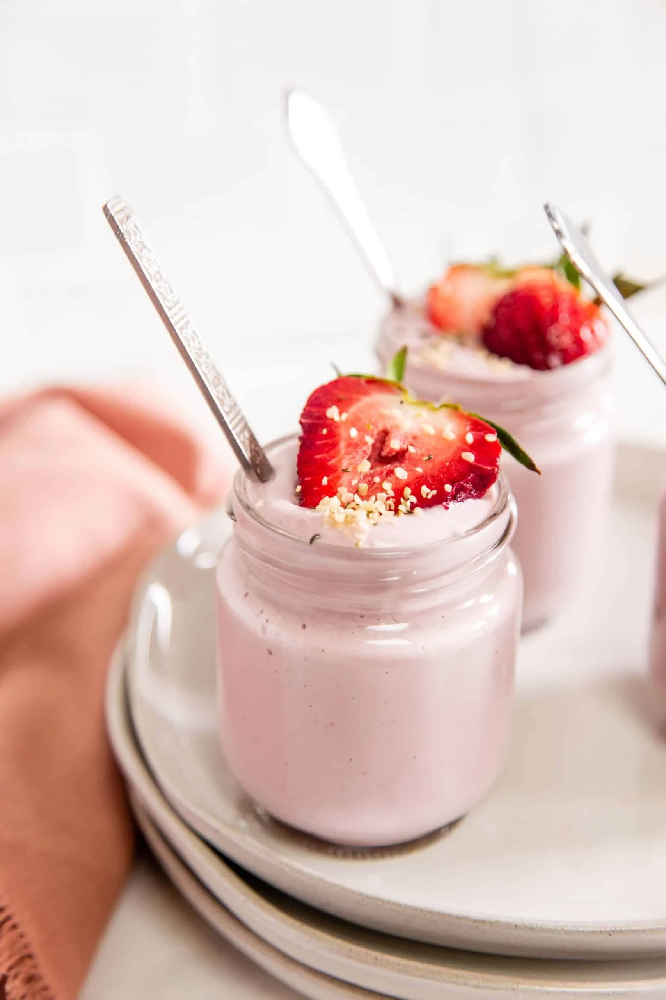

Strawberry Yogur

Am I worth it?
Of course! I am a quick cuisine skill that can be enjoyed anytime: for breakfast, as a desert, at midmorning, etc. Besides, my citric taste makes me refreshing and light hearted. You can use me to please your friends, to start the day with an energetic detail, or to have it as your secret pleasure.
What do I need?
- A 500ml bowl
- 5 glasses of 125ml
- 2 Strawberries
- 500ml of milk
- Preferred quantity of yeast, at least 50ml
- An Oven
- Love and Time
What steps do I follow?
- Fill the bowl with the mixture from:
- The squeezed Strawberries
- All the milk
- The yeast
- Start the Oven and preheat it 10mins at 200º
- Pour the mixture into the 5 glasses, 100ml respectively, then distribute posible extra mixture from the squeezed lemons
- Wait 15mins
- Take out the glasses carefully, cover them and wait 6hrs to store them in the refrigerator
After another 6hrs they will be ready to please your taste sense
Enjoy your desert, breakfast, etc!